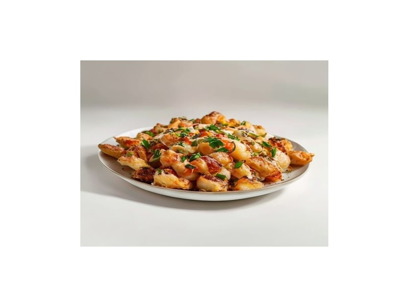

Polskie obiadki
Zrazy zawijane
Zrazy zawijane: 18 g białka, 195 kcal, 5 g węglowodanów i 12 g tłuszczu na 100 g. Kategoria: Polskie obiadki.
Kalorie195 kcalna 100 g
Białko / proteiny18 g
Węglowodany5 g
Tłuszcz12 g
Cena (szac.)~1,55 złza 100 g
Ceny zaktualizowano: maj 2026 (szacunek — ceny w popularnych supermarketach)
Porcja: porcja (2 szt., 200g)
| Kalorie | 390 kcal |
|---|---|
| Białko | 36 g |
| Węglowodany | 10 g |
| Tłuszcz | 24 g |
| Cena (szac.) | ~3,09 zł |
Szczegółowe składniki odżywcze na 100 g
| Wartość energetyczna (kalorie) | 195 kcal |
|---|---|
| Białko (proteiny) | 18 g |
| Węglowodany | 5 g |
| Tłuszcz | 12 g |
| Tłuszcze nasycone | 4.5 g |
| Tłuszcze nienasycone | 7.5 g |
| Witaminy i minerały | Żelazo, Tiamina (B1), Potas |
| Współczynnik kcal / 1 g białka | 10.8 |
| Cena produktu (szac. za 100 g) | ~1,55 zł |
| Cena za 100 g białka (szac.) | ~8,58 zł |